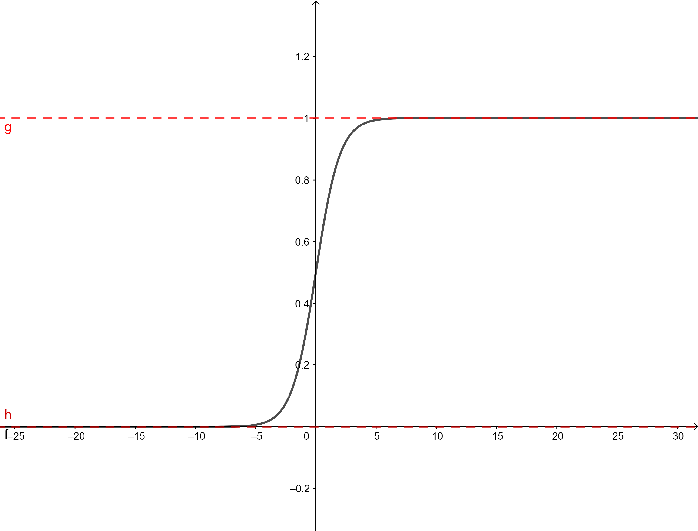
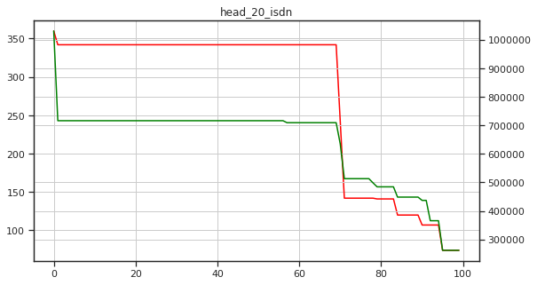

<!DOCTYPE html>
<html>
<head><meta name="generator" content="Hexo 3.8.0">
  <meta charset="utf-8">
  

  
  <title>Hexo</title>
  <meta name="viewport" content="width=device-width, initial-scale=1, maximum-scale=1">
  <meta property="og:type" content="website">
<meta property="og:title" content="Hexo">
<meta property="og:url" content="http://yoursite.com/index.html">
<meta property="og:site_name" content="Hexo">
<meta property="og:locale" content="default">
<meta name="twitter:card" content="summary">
<meta name="twitter:title" content="Hexo">
  
    <link rel="alternate" href="/atom.xml" title="Hexo" type="application/atom+xml">
  
  
    <link rel="icon" href="/favicon.png">
  
  
    <link href="//fonts.googleapis.com/css?family=Source+Code+Pro" rel="stylesheet" type="text/css">
  
  <link rel="stylesheet" href="/css/style.css">
</head>
</html>
<body>
  <div id="container">
    <div id="wrap">
      <header id="header">
  <div id="banner"></div>
  <div id="header-outer" class="outer">
    <div id="header-title" class="inner">
      <h1 id="logo-wrap">
        <a href="/" id="logo">Hexo</a>
      </h1>
      
    </div>
    <div id="header-inner" class="inner">
      <nav id="main-nav">
        <a id="main-nav-toggle" class="nav-icon"></a>
        
          <a class="main-nav-link" href="/">Home</a>
        
          <a class="main-nav-link" href="/archives">Archives</a>
        
      </nav>
      <nav id="sub-nav">
        
          <a id="nav-rss-link" class="nav-icon" href="/atom.xml" title="RSS Feed"></a>
        
        <a id="nav-search-btn" class="nav-icon" title="Search"></a>
      </nav>
      <div id="search-form-wrap">
        <form action="//google.com/search" method="get" accept-charset="UTF-8" class="search-form"><input type="search" name="q" class="search-form-input" placeholder="Search"><button type="submit" class="search-form-submit">&#xF002;</button><input type="hidden" name="sitesearch" value="http://yoursite.com"></form>
      </div>
    </div>
  </div>
</header>
      <div class="outer">
        <section id="main">
  
    <article id="post-美团机器学习实践-常用模型-场感知因子分解机" class="article article-type-post" itemscope itemprop="blogPost">
  <div class="article-meta">
    <a href="/2019/02/22/美团机器学习实践-常用模型-场感知因子分解机/" class="article-date">
  <time datetime="2019-02-22T06:16:07.660Z" itemprop="datePublished">2019-02-22</time>
</a>
    
  </div>
  <div class="article-inner">
    
    
      <header class="article-header">
        
  
    <h1 itemprop="name">
      <a class="article-title" href="/2019/02/22/美团机器学习实践-常用模型-场感知因子分解机/">场感知因子分解机</a>
    </h1>
  

      </header>
    
    <div class="article-entry" itemprop="articleBody">
      
        <h1 id="场感知因子分解机"><a href="#场感知因子分解机" class="headerlink" title="场感知因子分解机"></a>场感知因子分解机</h1><p>逻辑回归无法学习到特征间的组合关系，人工对特征组合需要做大量的特征工程工作，暴力组合模型太复杂、参数太多。利用模型来做特征组合，比较常见的是使用支持向量机的核函数来实现特征的交叉。但是多项式核函数的二次参数过多，特征组合后得到的特征矩阵十分稀疏。而在训练样本不足的时候，特征的矩阵的稀疏性很容易导致相关参数准确性较低。可以通过对二次项参数施加某种限制来减少参数的自由度。</p>
<p>因子分解机施加的限制是要求二次项参数矩阵是低秩的，能够分解为低秩矩阵的乘积。所有二次项参数矩阵$W$就可以分解为$W=V^TV$，$V$的第$j$列便是第$j$维特征的向量。$w_{ij}=&lt;v_i, v_j&gt;$就是因子分解机的核心思想。因子分解机的模型为：</p>
<p>$\phi_{FM}(\omega, x)=w_0+\sum \limits_{i=1}^{n}w_is_i+\sum \limits_{i=1}^n\sum \limits_{j=i+1}^{n}&lt;v_i, v_j&gt;x_ix_j$</p>
<p>其中，$v_i$ 是第 $i$ 维特征的隐向量，$⟨⋅,⋅⟩$ 代表向量点积。隐向量的长度为 $k（k&lt;&lt;n）$，包含 kk 个描述特征的因子。</p>
<p>上式是一个通用的拟合方程，可以采用不同的损失函数用于解决分类、二元回归等问题，比如可以采用均方差损失函数来求解回归问题，也可以采用Hinge/Cross-Entropy损失来求解分类问题。在进行二元分类时，因子分解机输出需要经过Sigmoid变换。</p>
<p>为了减少计算时间复杂度，可以通过如下变化简化因子分解机的二次项：</p>
<p>$\sum \limits_{i=1}^{n-1}\sum \limits_{j=i+1}^{n}&lt;v_i, v_j&gt;x_ix_j=\frac{1}{2}\sum\limits_{i=1}^{k}((\sum \limits_{j=1}^{n}v_{i,f}x_i)-\sum\limits_{i=1}^{n}v_{i,f}^2x_i^2)$</p>
<p>可以利用随机梯度下降来训练FM模型。模型各个参数的梯度如下<br>$$<br>\frac{\partial}{\partial \theta} = \begin{cases}<br>1, &amp; if\ \theta=\omega_0 \<br>x_i, &amp; if \ \theta=w_i \<br>x_i\sum_{j=1}^{n}v_{j,f}x_j-v_{i,f}x_i^2, &amp; if \ \theta=v_{i,f}<br>\end{cases}<br>$$<br>其中，$v_{j,f}$是隐向量$v_j$的第$f$个元素。</p>
<p>引入特征组（场）的概念来优化这个问题。场感知因子分解机将相同性质的特征归于同一个场，按照场级别分别计算当前特征与其他场里特征组合时的特征向量。在场感知因子分解机中，每一维特征$x_ix_j$，针对其他特征的每一种场$f_if_j$组合，都会学习一个隐向量$v_{i,f_j}v_{j,f_i}$，按照特征的含义将规则分为多个场，每个特征属于某个特定的场。每个特征映射出多个隐向量，每个隐向量对应一个场。当两个特征组合时，它们分别用这两个特征对应的场的隐向量做内积，因此场感知因子分解机的模型方程为：</p>
<p>$\phi(\omega, x)=\sum \limits_{i=1}^{n} \sum \limits_{j=i+1}^{n}&lt;v_{i,f_j}v_{j,f_i}&gt;x_ix_j$</p>
<h2 id="实例讲解"><a href="#实例讲解" class="headerlink" title="实例讲解"></a>实例讲解</h2><p>假设一个广告分类的问题，根据用户和广告位相关的特征，预测用户是否点击了广告。</p>
<table>
<thead>
<tr>
<th>Clicked？</th>
<th>Country</th>
<th>Day</th>
<th>Ad_type</th>
</tr>
</thead>
<tbody>
<tr>
<td>1</td>
<td>USA</td>
<td>26/11/15</td>
<td>Movie</td>
</tr>
<tr>
<td>0</td>
<td>China</td>
<td>1/7/14</td>
<td>Game</td>
</tr>
<tr>
<td>1</td>
<td>China</td>
<td>19/2/15</td>
<td>Game</td>
</tr>
</tbody>
</table>
<p>“Clicked?”是label，Country、Day、Ad_type是特征。由于三种特征都是categorical类型的，需要经过独热编码（One-Hot Encoding）转换成数值型特征。</p>
<table>
<thead>
<tr>
<th>Country=USA</th>
<th>Country=China</th>
<th>Day=26/11/15</th>
<th>Day=1/7/14</th>
<th>Day=19/2/15</th>
<th>Ad_type=Movie</th>
<th>Ad_type=Game</th>
</tr>
</thead>
<tbody>
<tr>
<td>1</td>
<td>0</td>
<td>1</td>
<td>0</td>
<td>0</td>
<td>1</td>
<td>0</td>
</tr>
<tr>
<td>0</td>
<td>1</td>
<td>0</td>
<td>1</td>
<td>0</td>
<td>0</td>
<td>1</td>
</tr>
<tr>
<td>0</td>
<td>1</td>
<td>0</td>
<td>0</td>
<td>1</td>
<td>0</td>
<td>1</td>
</tr>
</tbody>
</table>
<p>由上表可以看出，经过One-Hot编码之后，大部分样本数据特征是比较稀疏的。上面的样例中，每个样本有7维特征，但平均仅有3维特征具有非零值。实际上，这种情况并不是此例独有的，在真实应用场景中这种情况普遍存在。例如，CTR/CVR预测时，用户的性别、职业、教育水平、品类偏好，商品的品类等，经过One-Hot编码转换后都会导致样本数据的稀疏性。特别是商品品类这种类型的特征，如商品的末级品类约有550个，采用One-Hot编码生成550个数值特征，但每个样本的这550个特征，有且仅有一个是有效的（非零）。由此可见，数据稀疏性是实际问题中不可避免的挑战。</p>
<p>One-Hot编码的另一个特点就是导致特征空间大。例如，商品品类有550维特征，一个categorical特征转换为550维数值特征，特征空间剧增。</p>
<p>同时通过观察大量的样本数据可以发现，某些特征经过关联之后，与label之间的相关性就会提高。例如，“USA”与“Thanksgiving”、“China”与“Chinese New Year”这样的关联特征，对用户的点击有着正向的影响。换句话说，来自“China”的用户很可能会在“Chinese New Year”有大量的浏览、购买行为，而在“Thanksgiving”却不会有特别的消费行为。这种关联特征与label的正向相关性在实际问题中是普遍存在的，如“化妆品”类商品与“女”性，“球类运动配件”的商品与“男”性，“电影票”的商品与“电影”品类偏好等。因此，引入两个特征的组合是非常有意义的。</p>
<p>在数据稀疏性普遍存在的实际应用场景中，二次项参数的训练是很困难的。那么，如何解决二次项参数的训练问题呢？矩阵分解提供了一种解决思路。在model-based的协同过滤中，一个rating矩阵可以分解为user矩阵和item矩阵，每个user和item都可以采用一个隐向量表示.比如在下图中的例子中，我们把每个user表示成一个二维向量，同时把每个item表示成一个二维向量，两个向量的点积就是矩阵中user对item的打分。</p>
<p></p>
<p>类似地，所有二次项参数$w_{ij}$可以组成一个对称阵$W$,那么这个矩阵就可以分解为$W=V^TV​$</p>

      
    </div>
    <footer class="article-footer">
      <a data-url="http://yoursite.com/2019/02/22/美团机器学习实践-常用模型-场感知因子分解机/" data-id="cjsjosshw0002ncanw5zl2o0c" class="article-share-link">Share</a>
      
      
    </footer>
  </div>
  
</article>


  
    <article id="post-美团机器学习实践-常用模型-对数几率回归" class="article article-type-post" itemscope itemprop="blogPost">
  <div class="article-meta">
    <a href="/2019/02/22/美团机器学习实践-常用模型-对数几率回归/" class="article-date">
  <time datetime="2019-02-22T06:16:07.660Z" itemprop="datePublished">2019-02-22</time>
</a>
    
  </div>
  <div class="article-inner">
    
    
      <header class="article-header">
        
  
    <h1 itemprop="name">
      <a class="article-title" href="/2019/02/22/美团机器学习实践-常用模型-对数几率回归/">对数几率回归（逻辑回归）</a>
    </h1>
  

      </header>
    
    <div class="article-entry" itemprop="articleBody">
      
        <h1 id="对数几率回归（逻辑回归）"><a href="#对数几率回归（逻辑回归）" class="headerlink" title="对数几率回归（逻辑回归）"></a>对数几率回归（逻辑回归）</h1><h2 id="算法原理"><a href="#算法原理" class="headerlink" title="算法原理"></a>算法原理</h2><p></p>
<h3 id="y-frac-1-1-e-theta-Tx-b"><a href="#y-frac-1-1-e-theta-Tx-b" class="headerlink" title="$y=\frac{1}{1+e^{-\theta^Tx+b}}$"></a>$y=\frac{1}{1+e^{-\theta^Tx+b}}$</h3><p>逻辑回归是一种广义线性模型，它与线性回归模型包含的线性函数十分相似。逻辑回归通过对数概率函数将线性函数的结果进行映射，目标函数的取值空间从$(-\infin, +\infin)$映射到了$(0, 1)$,从而可以处理分类问题。</p>
<p>定义：（逻辑回归模型）二项逻辑回归模型有如下的条件概率分布:</p>
<p>$P(Y=1|X)=\frac{1}{1+e^{-\theta^Tx+b}}$<br>$P(Y=0|X)=1-\frac{1}{1+e^{-\theta^Tx+b}}$</p>
<p>其中$x\in R^n$是输入特征向量， $Y\in {0, 1}$是输出预测类别。</p>
<p>优化方法：</p>
<ul>
<li><p>使用梯度下降对逻辑回归模型进行求解。</p>
<p>如果$h_0=\frac{1}{1+e^{-\theta^Tx+b}}$，那么可以构造关于$\theta$最大似然概率，即令每个样本属于其真实标记的概率越大越好,:</p>
<p>$L(\theta) = \prod_{i=1}^{m}P(y_i|x_i;\theta)=\prod_{i=1}^{m}(h_\theta(x))^y(1-h_\theta(x))^{1-y}$</p>
<p>要最大化$L(\theta)$，可以先将上式取对数变为求和，然后乘以一个负系数转换为求解最小值的问题：</p>
<p>$L(\theta)=-\frac{1}{2}\sum_{i=1}^{m}[y_ilogh_\theta(x_i)+(1-y_i)log(1-h_\theta(x_i))]$</p>
<p>代入梯度下降法求解公式：</p>
<p>$\theta_{j+1}=\theta_j-\alpha\frac{\partial L(\theta)}{\partial \theta}=\theta_j-\alpha\frac{1}{m}\sum_{i=1}^{m}x_i[h_\theta(x_i)-y_i]$</p>
</li>
<li><p>周志华《机器学习》解法</p>
<p>考虑线性模型预测值$z=\theta^Tx+b$,要将预测值转换到为0/1类别，可以对预测值应用一个对数几率函数，即</p>
<h3 id="y-frac-1-1-e-z"><a href="#y-frac-1-1-e-z" class="headerlink" title="$y=\frac{1}{1+e^{-z}}$"></a>$y=\frac{1}{1+e^{-z}}$</h3><p>代入$z$，可得$y=\frac{1}{1+e^{-\theta^Tx+b}}$</p>
</li>
</ul>
<p>若将$y$视为样本$x$的正例可能性，那么$1-y$就是其反例的可能性，则两者的比值就是几率(odds)$\frac{y}{1-y}$, 反映了$x$作为正例的相对可能性。对几率取对数可得对数几率：</p>
<p>$ln\frac{y}{1-y}=\theta^Tx+b$</p>
<p>若将$y$视为类别的后验概率估计$p(y=1|x)$，则</p>
<p>$ln\frac{p(y=1|x)}{p(y=0|x)}=\theta^Tx+b$</p>
<p>显然有</p>
<p>$p(y=1|x)=\frac{e^{\theta^Tx+b}}{1+e^{\theta^Tx+b}}$</p>
<p>$p(y=0|x)=\frac{1}{1+e^{\theta^Tx+b}}$</p>
<p>于是，可以通过极大似然法来估计$\theta$和$b$，对数几率回归模型最大化对数似然为：</p>
<p>$l(\theta, b)=\sum_{i=1}^{m}ln p(y_i|x_i;\theta, b)$</p>
<p>即令每个样本属于其真实标记的概率越大越好。令$\beta=(\theta;b),\hat x=(x;1)$,则$\theta^Tx+b$可以简写为$\beta^T\hat x$。再令$p_1(\hat x’;\beta)=p(y=1|\hat x’;\beta),p_0(\hat x;\beta)=p(y=0|\hat x;\beta)=1-p_1(\hat x;\beta)$，则似然项可以重写为：</p>
<p>$p(y_i|x_i;\omega,b)=y_ip_1(\hat x_i;\beta)+(1-y_i)p_0(\hat x_i;\beta)$</p>
<p>代入最大化对数似然可得：</p>
<p>$l(\beta)=\sum_{i=1}^{m}(-y_i\beta^T\hat x_i+ln(1+e^{\beta^T\hat x_i}))$</p>
<p>上式是关于$\beta$的高阶可导连续凸函数，根据凸优化理论，经典的数值优化算法如梯度下降、牛顿法等都可以求得其最优解，于是可得：</p>
<p>$\beta^*=arg\min \limits_l{l(\beta)}$</p>
<p>以牛顿法为例，其第$t+1$轮迭代解的更新公式为：</p>
<p>$\beta^{t+1}=\beta^t-(\frac{\partial^2l(\beta)}{\partial\beta\partial\beta^T})^{-1}\frac{\partial l(\beta)}{\partial\beta}$</p>
<p>其中，关于$\beta$的一阶、二阶导数分别为</p>
<p>$\frac{\partial l(\beta)}{\partial\beta}=-\sum \limits_{i=1}^{m}\hat x_i(y_i-p_1(\hat x_i;\beta)),$</p>
<p>$\frac{\partial^2l(\beta)}{\partial\beta\partial\beta^T}=\sum \limits_{i=1}^{m} \hat x_i\hat x_i^Tp_1(\hat x_i;\beta)(1-p_1(\hat x_i;\beta))$</p>
<h2 id="逻辑回归应用"><a href="#逻辑回归应用" class="headerlink" title="逻辑回归应用"></a>逻辑回归应用</h2><p>逻辑回归常用于疾病自动诊断、经济预测、点击率预测等领域。处理速度快，容易并行，适合大规模训练的样本和特征。但模型需要大量的特征组合和离散的工作来增加特征的表达性，模型表达能力弱，比较容易欠拟合。</p>

      
    </div>
    <footer class="article-footer">
      <a data-url="http://yoursite.com/2019/02/22/美团机器学习实践-常用模型-对数几率回归/" data-id="cjsjossi00003ncannuz61hdr" class="article-share-link">Share</a>
      
      
    </footer>
  </div>
  
</article>


  
    <article id="post-美团机器学习实践-常用模型-梯度提升树" class="article article-type-post" itemscope itemprop="blogPost">
  <div class="article-meta">
    <a href="/2019/02/22/美团机器学习实践-常用模型-梯度提升树/" class="article-date">
  <time datetime="2019-02-22T06:16:07.660Z" itemprop="datePublished">2019-02-22</time>
</a>
    
  </div>
  <div class="article-inner">
    
    
      <header class="article-header">
        
  
    <h1 itemprop="name">
      <a class="article-title" href="/2019/02/22/美团机器学习实践-常用模型-梯度提升树/">梯度提升树</a>
    </h1>
  

      </header>
    
    <div class="article-entry" itemprop="articleBody">
      
        <h1 id="梯度提升树"><a href="#梯度提升树" class="headerlink" title="梯度提升树"></a>梯度提升树</h1><p>梯度提升树是一种基于回归树的集成学习方法，它通过构造多个弱的回归树作为基学习器，并把这些树的结果累加起来作为最终的预测输出。</p>
<h2 id="原理"><a href="#原理" class="headerlink" title="原理"></a>原理</h2><p>梯度提升树是集成学习方法Boosting的一个成员，它在训练时采用前向分布算法，首先确定一棵树的拟合的值，然后基于之前所有树的误差来更新训练，并训练下一棵树，一步一步迭代下去直到迭代次数完毕。首先确定初始提升树$f(x)=0$，然后在后续训练时，第$m$步的模型是：<br>$$<br>f_m(x)=f_{m-1}(x)+T(x;\Theta_m)<br>$$<br>其中，$f_{m-1}(x)$是当前模型，通过经验风险最小化确定下一棵树的参数$\Theta_m$。<br>$$<br>\Theta_m = argmin \sum \limits_{i=1}^{N}L(y_i, f_{m-1}(x_i)+T(x; \Theta_m))<br>$$<br>$T(x; \Theta_m)$表示当前构建的随机树。可以使用梯度下降法优化上式。</p>

      
    </div>
    <footer class="article-footer">
      <a data-url="http://yoursite.com/2019/02/22/美团机器学习实践-常用模型-梯度提升树/" data-id="cjsjossid0004ncana9ac1j6h" class="article-share-link">Share</a>
      
      
    </footer>
  </div>
  
</article>


  
    <article id="post-美团机器学习实践-模型融合" class="article article-type-post" itemscope itemprop="blogPost">
  <div class="article-meta">
    <a href="/2019/02/22/美团机器学习实践-模型融合/" class="article-date">
  <time datetime="2019-02-22T06:16:07.660Z" itemprop="datePublished">2019-02-22</time>
</a>
    
  </div>
  <div class="article-inner">
    
    
      <header class="article-header">
        
  
    <h1 itemprop="name">
      <a class="article-title" href="/2019/02/22/美团机器学习实践-模型融合/">模型融合</a>
    </h1>
  

      </header>
    
    <div class="article-entry" itemprop="articleBody">
      
        <h1 id="模型融合"><a href="#模型融合" class="headerlink" title="模型融合"></a>模型融合</h1><p>模型融合通过构建并融合多个模型来完成学习任务，也称多分类器系统或基于委员会的学习。</p>
<p></p>
<p>模型融合主要包含两个阶段：构建若干单模型和模型融合。单模型通常由基本的学习算法在训练集上学习得到，也称为基学习器、个体学习器或者组件学习器。如果模型融合使用的单模型属于一类学习算法，称为同质模型融合；反之则称为异质模型融合。模型融合阶段可选择多种融合方法，如平均法、投票法以及学习法等。多个融合模型还可以进行二阶融合甚至多阶融合。通常情况下，融合模型的泛化能力要比单模型强得多。</p>
<ul>
<li>融合收益</li>
</ul>
<p>从统计的角度看，机器学习的任务可以视为寻找一个最佳的假设空间。找出多个能够达到同等性能的假设空间，通过融合的方式来平均这些模型的预测结果，可以降低模型预测错误的风险。</p>
<p>从计算的角度看，许多学习算法采用局部搜索的方式来寻找最佳参数，但是这样很容易陷入局部最优的情况。模型融合可以看作对同一份训练集、从很多不同的起始点进行局部搜索，然后结合起来，可以降低陷入糟糕的局部最优的风险。</p>
<p>从表示的角度看，理论上理想的学习算法可以表示所有可能的分类，例如神经网络和决策树。但是在实际应用中，能够用于训练的数据是有限的，有些学习任务的真实假设可能不在当前学习算法所考虑到的假设空间中，此时如果使用单模型肯定无效。模型融合可以使假设空间扩大，从而使得这些学习任务可能得到正确的表示。</p>
<p></p>
<ul>
<li>模型误差-分歧分解</li>
</ul>
<p>模型多样性是指单模型之间的差异。单模型差异性越大，融合效果越好。在模型融合中，单模型应该好而不同。</p>
<p>假设使用单模型$h_1, h_2, …, h_r$通过加权平均的方法融合来完成学习任务，$f:\R^d\rightarrow\R$，如下所示：<br>$$<br>H(x)=\sum \limits_{i=1}^{T}w_ih_i(x)<br>$$<br>对于样本$x$，定义单模型$h_i$的分歧为：<br>$$<br>A(h_i|x)=(h_i(x)-H(x))^2<br>$$<br>那么融合的分歧为：<br>$$<br>\overline{A}(h|x)=\sum \limits_{i=1}^{T}w_iA(h_i|x)=\sum \limits_{i=1}^{T}w_i(h(x)-H(x))^2<br>$$<br>单模型和融合模型的平方误差分别为：<br>$$<br>E(h_i|x)=(f(x)-h_i(x))^2 \<br>E(H|x)=(f(x)-H(x))^2<br>$$<br>令<br>$$<br>\overline E(h|x)=\sum \limits_{i=1}^{T}w_iE(h_i|x)<br>$$<br>表示单模型学习误差的加权平均值，则有<br>$$<br>\overline A(h|x)=\sum \limits_{i=1}^{T}w_iE(h_i|x)-E(H|x)=\overline E(h|x)-E(H|x)<br>$$<br>有<br>$$<br>\sum \limits_{i=1}^Tw_i\int A(h_i|x)p(x)dx=<br>\sum \limits _{i=1}^T w_i \int E(h_i|x)p(x)dx-\int E(H|x)p(x)dx<br>$$<br>类似地，$h_i$在全样本上的泛化误差和分歧项分别为<br>$$<br>E_i=\int E(h_i \ | \ x)p(x)dx\<br>A_i=\int A(h_i \ | \ x)p(x)dx<br>$$<br>融合的泛化误差为<br>$$<br>E = \int E(H|x)p(x)d(x)<br>$$<br>令$\overline E=\sum_{i=1}^Tw_iE_i$表示个体学习期泛化误差的加权平均值，$\overline A=\sum_{i=1}^Tw_iA_i$表示个体学习器的加权分歧值，则有误差-分歧分解<br>$$<br>E=\overline E-\overline A<br>$$<br>上式表明单模型准确性越高（泛化误差越小），多样性越大（分歧值越大）则融合模型的表现越好（泛化误差越小）。</p>
<ul>
<li>模型多样性度量</li>
</ul>
<p>模型多样性度量是指度量模型融合中单模型的多样性。总体上，模型多样性度量主要分为承兑的多样性和非成对的多样性度量。</p>
<p>首先，假设二分类任务有$m$个样本，分类器$h_j$和分类器$h_i$对样本的预测结果组合情况如下：</p>
<table>
<thead>
<tr>
<th style="text-align:center"></th>
<th style="text-align:center">$h_i$=1</th>
<th style="text-align:center">$h_i$=0</th>
</tr>
</thead>
<tbody>
<tr>
<td style="text-align:center">$h_j=1$</td>
<td style="text-align:center">a</td>
<td style="text-align:center">c</td>
</tr>
<tr>
<td style="text-align:center">$h_j=0$</td>
<td style="text-align:center">b</td>
<td style="text-align:center">d</td>
</tr>
</tbody>
</table>
<p>成对多样性度量主要有以下参数：</p>
<p>不一致度量：$dis_{i, j}=\frac{b+c}{m}$</p>
<p>相关系数：$\rho_{ij}=\frac{ad-bc}{\sqrt{(a+b)(a+c)(c+d)(b+d)}}$</p>
<p>Q统计：$Q_{ij}=\frac{ad-bc}{ad+bc}$</p>
<p>K统计：$K=\frac{p_1-p_2}{1-p_2}$，$p_1=\frac{a+d}{m}$,$p_2=\frac{(a+b)(a+c)+(c+d)(b+d)}{m^2}$</p>
<p>双次失败度量：$df_{ij}=\frac{\sum_{k=1}^m\prod(h_i(x_k)\ne y_k)\bigwedge h_j(x_k)\ne y_k}{m}$</p>
<p>非成对多样性度量主要有以下参数：</p>
<p>KW差异：$KW=\frac{1}{mT^2}\sum \limits_{k=1}^ml(x_k)(T-l(x_k))$</p>
<p>$\kappa$度量（或评判一致性度量）：<br>$$<br>\kappa = 1-\frac{1}{(T-1)\overline p(1-\overline p)}KW<br>$$</p>
<p>$$<br>\overline p=\frac{1}{mT}\sum \limits_{i=1}^{T}\sum \limits_{k=1}^{m}\prod (h_i(x_k)=y_k)<br>$$</p>
<p>熵度量：<br>$$<br>Ent_{cc}=\frac{1}{m}\sum \limits_{k=1}^{m}\sum \limits_{y\in{-1, +1}}-P(y|x_k)logP(y|x_k)\<br>P(y|x_k)=\frac{1}{T}\sum \limits_{i=1}^T\prod(h_i(x_k)=y_k)<br>$$<br>另外还有难点度量以及广义多样性度量等</p>
<ul>
<li>多样性增强</li>
</ul>
<p>应该尽可能有效地生成多样性大的单模型。一般增强多样性的思路是在学习过程中引入随机性，常见做法是对数据样本、输入属性、输出表示、和算法参数等进行扰动。</p>
<ol>
<li>数据样本扰动：给定初始数据集，产生不同的数据子集，训练单模型。</li>
<li>输入属性扰动：使用不同的特征子空间训练单模型。</li>
<li>输出表示扰动：对输出表示进行操纵以增强多样性。将都分类任务转换为多个二分类任务来训练单模型；翻转法随机改变训练样本标记；输出调制法将分类输出转换为回归输出来训练单模型。</li>
<li>算法参数扰动：模型训练一般都需要调配参数。基础参数被赋予不同的值，产生的单模型往往差别较大。单模型通常需使用交叉验证来确定参数。因此融合模型可以看作使用不同参数训练了多个模型。</li>
</ol>
<h2 id="融合方法"><a href="#融合方法" class="headerlink" title="融合方法"></a>融合方法</h2><ul>
<li>平均法</li>
</ul>
<p>对单模型结果进行加权平均输出。</p>
<ul>
<li><p>投票法</p>
<p>绝对多数投票，相对多数投票，加权投票，软投票</p>
</li>
<li><p>Bagging</p>
</li>
<li>Stacking</li>
</ul>
<h2 id="小结"><a href="#小结" class="headerlink" title="小结"></a>小结</h2><p>模型融合本质上属于集成学习的范畴。单模型做到一定程度后，如果单模型的多样性比较大，尝试模型融合极有可能取得令人喜悦的效果提升。但使用模型融合还要考虑系统性能和高阶融合收益的权衡问题。</p>

      
    </div>
    <footer class="article-footer">
      <a data-url="http://yoursite.com/2019/02/22/美团机器学习实践-模型融合/" data-id="cjsjossih0005ncanjuy36tlu" class="article-share-link">Share</a>
      
      
    </footer>
  </div>
  
</article>


  
    <article id="post-美团机器学习实践-特征工程" class="article article-type-post" itemscope itemprop="blogPost">
  <div class="article-meta">
    <a href="/2019/02/22/美团机器学习实践-特征工程/" class="article-date">
  <time datetime="2019-02-22T06:16:07.660Z" itemprop="datePublished">2019-02-22</time>
</a>
    
  </div>
  <div class="article-inner">
    
    
    <div class="article-entry" itemprop="articleBody">
      
        <h1 id="特征工程"><a href="#特征工程" class="headerlink" title="特征工程"></a>特征工程</h1><h2 id="特征提取"><a href="#特征提取" class="headerlink" title="特征提取"></a>特征提取</h2><ul>
<li>探索性数据分析</li>
<li><p>数值特征提取</p>
<ul>
<li>截断</li>
<li>二值化</li>
<li>分桶</li>
<li>缩放</li>
<li>缺失值处理</li>
<li>特征交叉</li>
<li>非线性编码</li>
<li>行统计量</li>
</ul>
</li>
<li><p>类别特征</p>
<ul>
<li>自然数编码</li>
<li>独热编码</li>
<li>分层编码</li>
<li>散列编码(HASH编码)</li>
<li>计数编码</li>
<li>计数排名编码</li>
<li>目标编码</li>
<li>类别特征之间交叉组合</li>
<li>类别特征和数值特征之间交叉组合</li>
</ul>
</li>
<li><p>时间特征</p>
<ul>
<li>时间基本特征</li>
<li>滞后特征</li>
<li>滑动窗口统计特征</li>
<li>扩展窗口统计</li>
</ul>
</li>
<li><p>空间特征</p>
<ul>
<li>数值特征</li>
<li>散列特征</li>
</ul>
</li>
<li><p>文本特征</p>
<ul>
<li>预处理：转化大小写、分词、去除无用字符、提取词根、拼写纠错、词干提取、标点符号编码、文档特征、实体插入和提取、Word2Vec、文本相似性、去除停止词、去除稀有词、TF-IDF、LDA、LSA等</li>
<li>语料构建</li>
<li>文本清洗</li>
<li>分词：词性标注、词形还原和词干提取、文本统计特征、N-Gram模型</li>
<li>Skip-Gram模型：词集模型、词袋模型、TF-IDF</li>
<li>余弦相似度</li>
<li>Jaccard相似度</li>
<li>Levenshtein（编辑距离）</li>
<li>隐性语义分析</li>
<li>Word2Vec</li>
</ul>
</li>
</ul>
<h2 id="特征选择"><a href="#特征选择" class="headerlink" title="特征选择"></a>特征选择</h2><ul>
<li>特征过滤</li>
</ul>
<figure class="highlight plain"><table><tr><td class="gutter"><pre><span class="line">1</span><br><span class="line">2</span><br><span class="line">3</span><br><span class="line">4</span><br></pre></td><td class="code"><pre><span class="line">graph LR</span><br><span class="line">特征全集--&gt;特征选择</span><br><span class="line">特征选择--&gt;机器学习算法</span><br><span class="line">机器学习算法--&gt;模型效果</span><br></pre></td></tr></table></figure>
<ul>
<li>覆盖率</li>
<li>皮尔森相关系数</li>
<li>Fisher得分</li>
<li>假设检验</li>
<li>互信息（Kullback-Leibler散度、相对熵）</li>
<li>最小冗余最大相关性</li>
<li><p>相关特征选择</p>
</li>
<li><p>封装方法</p>
<p>对特征子集训练模型，评估模型优劣来选择特征</p>
<figure class="highlight plain"><table><tr><td class="gutter"><pre><span class="line">1</span><br><span class="line">2</span><br><span class="line">3</span><br><span class="line">4</span><br><span class="line">5</span><br><span class="line">6</span><br><span class="line">7</span><br><span class="line">8</span><br><span class="line">9</span><br></pre></td><td class="code"><pre><span class="line">graph LR</span><br><span class="line">特征全集</span><br><span class="line">subgraph 特征选择</span><br><span class="line">生成特征子集--&gt;机器学习方法</span><br><span class="line">机器学习方法--&gt;生成特征子集</span><br><span class="line">end</span><br><span class="line">模型效果</span><br><span class="line">特征全集--&gt;生成特征子集</span><br><span class="line">机器学习方法--&gt;模型效果</span><br></pre></td></tr></table></figure>
<ul>
<li>完全搜索 </li>
<li>启发式搜索</li>
<li>随机搜索</li>
</ul>
</li>
<li><p>嵌入方法</p>
<figure class="highlight plain"><table><tr><td class="gutter"><pre><span class="line">1</span><br><span class="line">2</span><br><span class="line">3</span><br><span class="line">4</span><br><span class="line">5</span><br><span class="line">6</span><br><span class="line">7</span><br></pre></td><td class="code"><pre><span class="line">graph LR</span><br><span class="line">特征全集</span><br><span class="line">subgraph 特征选择</span><br><span class="line">生成特征子集--&gt;机器学习方法+模型效果</span><br><span class="line">机器学习方法+模型效果--&gt;生成特征子集</span><br><span class="line">end</span><br><span class="line">特征全集--&gt;生成特征子集</span><br></pre></td></tr></table></figure>
<ul>
<li>LASSO方法</li>
</ul>
</li>
</ul>
<table>
<thead>
<tr>
<th></th>
<th>特征选择方法</th>
<th>优点</th>
<th>缺点</th>
<th>举例</th>
</tr>
</thead>
<tbody>
<tr>
<td>过滤方法</td>
<td>单变量</td>
<td>速度快<br>可扩展<br>跟机器学习模型独立</td>
<td>忽略特征之间的关系<br>忽略特征和模型之间的关系</td>
<td>卡方检验<br>信息增益<br>相关系数</td>
</tr>
<tr>
<td>过滤方法</td>
<td>多变量</td>
<td>考虑了特征之间的相关性<br>跟机器学习模型独立<br>计算复杂度优于封装方法</td>
<td>计算速度和可扩展性低于单变量方法<br>忽略了特征和模型之间的关系</td>
<td>基于相关性的特征选择(CFS)<br>MBF<br>FCBF</td>
</tr>
<tr>
<td>封装方法</td>
<td>确定性算法</td>
<td>简单<br>跟机器学习模型相关<br>考虑特征之间的相互作用<br>计算密集程度低于随机算法</td>
<td>容易过拟合<br>相比随机算法容易卡在局部最优子集<br>依赖机器学习模型</td>
<td>序列向前特征选择<br>序列向后特征删减<br>增Q删R</td>
</tr>
<tr>
<td></td>
<td>随机算法</td>
<td>不容易达到局部极小点<br>跟机器学习模型相关<br>考虑特征之间的相互作用</td>
<td>计算密集<br>依赖机器学习模型<br></td>
<td>模拟退火<br>随机梯度下降<br>基因算法</td>
</tr>
<tr>
<td>嵌入方法</td>
<td></td>
<td>与模型相关<br>计算复杂度优于封装方法<br>考虑特征之间的相互作用</td>
<td>依赖机器学习模型</td>
<td>决策树、随机森林、梯度提升树<br>SVM<br>LASSO<br></td>
</tr>
</tbody>
</table>

      
    </div>
    <footer class="article-footer">
      <a data-url="http://yoursite.com/2019/02/22/美团机器学习实践-特征工程/" data-id="cjsjossik0006ncan9qyubkp6" class="article-share-link">Share</a>
      
      
    </footer>
  </div>
  
</article>


  
    <article id="post-美团机器学习实践-用户画像" class="article article-type-post" itemscope itemprop="blogPost">
  <div class="article-meta">
    <a href="/2019/02/22/美团机器学习实践-用户画像/" class="article-date">
  <time datetime="2019-02-22T06:16:07.660Z" itemprop="datePublished">2019-02-22</time>
</a>
    
  </div>
  <div class="article-inner">
    
    
      <header class="article-header">
        
  
    <h1 itemprop="name">
      <a class="article-title" href="/2019/02/22/美团机器学习实践-用户画像/">用户画像</a>
    </h1>
  

      </header>
    
    <div class="article-entry" itemprop="articleBody">
      
        <h1 id="用户画像"><a href="#用户画像" class="headerlink" title="用户画像"></a>用户画像</h1><p>用户画像这一概念在业界没有明确的定义。用户模型指真实用户的虚拟代表，是在深刻理解真实数据的基础上得出的一个虚拟用户；通过调研去了解用户，根据其目标、行为和观点的差异，将他们分为不同的类型，然后从每种类型中抽取出典型特征，赋予名字、照片、人口统计学要素、场景等描述，就形成了一个用户模型。</p>
<p>大数据背景下的用户画像，就是从海量的用户数据中，建模抽象出每个用户的属性标签体系，这些属性通常具有一定的商业价值。用户画像要解决的主要问题，就是使用纷芜繁杂、没有直接商业价值的数据，通过清洗、挖掘、整理、生产出能直接指导商业运营的用户属性体系，包括人口属性、行为轨迹、用户分群、生活场景、消费偏好等，这些属性需要有明确的层级划分和可理解性。这些用户属性我们通常称为标签。</p>
<p></p>
<p>大分类通常包括：</p>
<ul>
<li>人口属性</li>
<li>兴趣偏好</li>
<li>特征人群</li>
<li>用户分级</li>
<li>LBS属性</li>
<li>用户行为</li>
<li>业务标签</li>
</ul>
<h2 id="用户画像数据挖掘"><a href="#用户画像数据挖掘" class="headerlink" title="用户画像数据挖掘"></a>用户画像数据挖掘</h2><p>用户画像标签体系的生产，从开发实现的角度说，通常分为两大类：一类是经过策略统计分析直接得到；另一类是通过机器学习训练模型，然后基于模型预测得到。</p>
<p>第二类首先手机样本集合建立机器学习模型，然后在全量数据上做预测计算。</p>
<h3 id="整体架构"><a href="#整体架构" class="headerlink" title="整体架构"></a>整体架构</h3><p>用户画像数据的生产和消费是一个比较复杂的过程，通常涉及数据收集、数据清洗、特征生成、标签建模、预测计算、效果评估、线上应用、效果反馈等多个环节。</p>
<ul>
<li><p>数据收集</p>
<p>公司日志数据、互联网公开数据、合作数据</p>
</li>
<li><p>特征计算</p>
<p>数据处理（异常值过滤、数据异构转同构）、数据加工（统计、平滑、归一化）</p>
<p>特征爬虫：给出数据样本，自动扫描结果化数据表，根据一些相关性指标（如相关系数、卡方、p值等），找到跟样本标签强相关的数据列，稍作处理之后可以加入特征库做后续建模特征使用</p>
</li>
<li><p>特征库维护</p>
<p>特征生成之后，需要统一管理，方便新特征收录、老特征下线，可视化展示各种统计指标。旁路系统监控特征的波动情况。</p>
</li>
<li><p>机器学习模型</p>
<p>拥有比较完备的特征库之后，就可以对标签做机器学习建模：特征选择、模型训练、效果评估、例行预测。特征选择通常采用高效的Filter方法，直接通过卡方、信息增益等指标度量特征的重要程度。</p>
</li>
<li><p>应用接口</p>
<p>生成标签之后，需要考虑如何将标签应用到线上，获得收益反馈。直接同步流转使用离线Hive表数据；标签收录管理。标签数量和质量监控。</p>
</li>
<li><p>画像应用</p>
<p>将用户画像的标签应用到各个业务线。应用方向：精细化运营、个性化排序、个性化推荐、商业分析、金融征信建模、反作弊风控、个性化展现等。</p>
</li>
</ul>

      
    </div>
    <footer class="article-footer">
      <a data-url="http://yoursite.com/2019/02/22/美团机器学习实践-用户画像/" data-id="cjsjossio0007ncan47hgs2oa" class="article-share-link">Share</a>
      
      
    </footer>
  </div>
  
</article>


  
    <article id="post-roaminglog特征挖掘" class="article article-type-post" itemscope itemprop="blogPost">
  <div class="article-meta">
    <a href="/2019/02/22/roaminglog特征挖掘/" class="article-date">
  <time datetime="2019-02-22T06:16:07.644Z" itemprop="datePublished">2019-02-22</time>
</a>
    
  </div>
  <div class="article-inner">
    
    
      <header class="article-header">
        
  
    <h1 itemprop="name">
      <a class="article-title" href="/2019/02/22/roaminglog特征挖掘/">roaminglog表特征数据挖掘</a>
    </h1>
  

      </header>
    
    <div class="article-entry" itemprop="articleBody">
      
        <h1 id="roaminglog表特征数据挖掘"><a href="#roaminglog表特征数据挖掘" class="headerlink" title="roaminglog表特征数据挖掘"></a>roaminglog表特征数据挖掘</h1><p><code>roaminglog</code>表记录了江苏联通用户的漫游通话行为，每条记录记录一次通话，其中江苏用户可能是呼叫方，也可能是接听方，通话方向由<code>record_type</code>决定。<code>record_type</code>=20,江苏联通用户主叫，<code>record_type</code>=30，江苏联通被叫。进行特征工程时，要注意以江苏联通用户为主键(<code>caller_isdn</code>,<code>called_isdn</code>)，区分<code>record_type</code>分别进行特征工程</p>
<p>全表共58个字段，主要包含了用户代码（电话号码）、省份和城市信息、通话信息、费用信息、时间信息，但不包含通话时长等信息。分析多日数据可知，平日一日记录数为600万，用户量为约100万。对于用户量100万的表，全部加载到内存中进行分析处理也是可行的。</p>
<h2 id="roaminglog特征工程"><a href="#roaminglog特征工程" class="headerlink" title="roaminglog特征工程"></a>roaminglog特征工程</h2><p>对<code>roaminglog</code>中的用户，使用分组汇总的方式可以得到较丰富的统计特征：</p>
<ul>
<li><p>用户属性：号码前缀3位、频繁漫游城市、频繁漫游省份</p>
</li>
<li><p>呼叫向：用户呼叫记录数、用户呼叫人数、用户呼叫城市数、用户呼叫省份数、最早呼叫时间、最晚呼叫时间、漫游通话费（总和、最大、最小、平均、标准差）、早中晚呼叫记录数、各省份呼叫次数</p>
</li>
<li><p>接听向（类似呼叫向）：用户接听记录数，用户接听人数、用户接听省份数、用户接听城市数、最早接听时间、最晚接听事件、早中晚接听记录数、各省份接听次数</p>
</li>
</ul>
<p>构建一些比值特征：</p>
<ul>
<li>呼叫/接听：呼叫记录/接听记录、呼叫人数/接听人数、呼叫城市数/接听城市数、呼叫省份数/接听省份数</li>
<li>漫游通话费：总和/最大、最大/最小、总和/标准差</li>
</ul>
<h2 id="数据探索分析"><a href="#数据探索分析" class="headerlink" title="数据探索分析"></a>数据探索分析</h2><ol>
<li><p>描述统计量</p>
<p>一些统计量对于正常和不良号码有较好的区分能力</p>
<p></p>
<p></p>
<p></p>
<p></p>
<p></p>
</li>
<li><p>部分字段分布直方图</p>
<p></p>
<p></p>
<p></p>
</li>
<li><p>特点分析</p>
<ul>
<li>不良用户倾向于在工作时间实施诈骗行为，通话集中在白天。</li>
<li>号码前缀有较大差异</li>
<li><p>不良号码的数量与正常号码数量相比，差距极大。不良号码在很多特征上甚至表现不出明显的统计意义。</p>
</li>
<li><p>不良用户特征倾向于与正常用户同分布，表现出一定程度的相似。有类似的分布模式。</p>
</li>
<li>值为0所占数量相当多，不论正常或不良</li>
</ul>
</li>
<li><p>字段正负样本区分能力分析</p>
<p>我们查看在大于值域内某阈值的规则下，正负样本的留存比例分布情况，以下是一些区分能力较强的字段分割示意图。</p>
<p></p>
</li>
</ol>
<p></p>
<p></p>
<p></p>
<p></p>
<p></p>
<p></p>
<p></p>
<p></p>
<p></p>
<p>分析结论：</p>
<ul>
<li>号码前缀特征差别较大，正常号码中有非13x号段的</li>
<li>不良号码的不同拨打人数相对正常号码要高，在人次上也更多</li>
<li>不良号码倾向于向更多不同省份拨打电话</li>
<li>相应的，漫游通话费用也要高一些</li>
</ul>

      
    </div>
    <footer class="article-footer">
      <a data-url="http://yoursite.com/2019/02/22/roaminglog特征挖掘/" data-id="cjsjosshk0001ncan17wftuxy" class="article-share-link">Share</a>
      
      
    </footer>
  </div>
  
</article>


  
    <article id="post-hello-world" class="article article-type-post" itemscope itemprop="blogPost">
  <div class="article-meta">
    <a href="/2019/02/22/hello-world/" class="article-date">
  <time datetime="2019-02-22T06:11:43.359Z" itemprop="datePublished">2019-02-22</time>
</a>
    
  </div>
  <div class="article-inner">
    
    
      <header class="article-header">
        
  
    <h1 itemprop="name">
      <a class="article-title" href="/2019/02/22/hello-world/">Hello World</a>
    </h1>
  

      </header>
    
    <div class="article-entry" itemprop="articleBody">
      
        <p>Welcome to <a href="https://hexo.io/" target="_blank" rel="noopener">Hexo</a>! This is your very first post. Check <a href="https://hexo.io/docs/" target="_blank" rel="noopener">documentation</a> for more info. If you get any problems when using Hexo, you can find the answer in <a href="https://hexo.io/docs/troubleshooting.html" target="_blank" rel="noopener">troubleshooting</a> or you can ask me on <a href="https://github.com/hexojs/hexo/issues" target="_blank" rel="noopener">GitHub</a>.</p>
<h2 id="Quick-Start"><a href="#Quick-Start" class="headerlink" title="Quick Start"></a>Quick Start</h2><h3 id="Create-a-new-post"><a href="#Create-a-new-post" class="headerlink" title="Create a new post"></a>Create a new post</h3><figure class="highlight bash"><table><tr><td class="gutter"><pre><span class="line">1</span><br></pre></td><td class="code"><pre><span class="line">$ hexo new <span class="string">"My New Post"</span></span><br></pre></td></tr></table></figure>
<p>More info: <a href="https://hexo.io/docs/writing.html" target="_blank" rel="noopener">Writing</a></p>
<h3 id="Run-server"><a href="#Run-server" class="headerlink" title="Run server"></a>Run server</h3><figure class="highlight bash"><table><tr><td class="gutter"><pre><span class="line">1</span><br></pre></td><td class="code"><pre><span class="line">$ hexo server</span><br></pre></td></tr></table></figure>
<p>More info: <a href="https://hexo.io/docs/server.html" target="_blank" rel="noopener">Server</a></p>
<h3 id="Generate-static-files"><a href="#Generate-static-files" class="headerlink" title="Generate static files"></a>Generate static files</h3><figure class="highlight bash"><table><tr><td class="gutter"><pre><span class="line">1</span><br></pre></td><td class="code"><pre><span class="line">$ hexo generate</span><br></pre></td></tr></table></figure>
<p>More info: <a href="https://hexo.io/docs/generating.html" target="_blank" rel="noopener">Generating</a></p>
<h3 id="Deploy-to-remote-sites"><a href="#Deploy-to-remote-sites" class="headerlink" title="Deploy to remote sites"></a>Deploy to remote sites</h3><figure class="highlight bash"><table><tr><td class="gutter"><pre><span class="line">1</span><br></pre></td><td class="code"><pre><span class="line">$ hexo deploy</span><br></pre></td></tr></table></figure>
<p>More info: <a href="https://hexo.io/docs/deployment.html" target="_blank" rel="noopener">Deployment</a></p>

      
    </div>
    <footer class="article-footer">
      <a data-url="http://yoursite.com/2019/02/22/hello-world/" data-id="cjsjosse70000ncanz8jfx853" class="article-share-link">Share</a>
      
      
    </footer>
  </div>
  
</article>


  


</section>
        
          <aside id="sidebar">
  
    

  
    

  
    
  
    
  <div class="widget-wrap">
    <h3 class="widget-title">Archives</h3>
    <div class="widget">
      <ul class="archive-list"><li class="archive-list-item"><a class="archive-list-link" href="/archives/2019/02/">February 2019</a></li></ul>
    </div>
  </div>


  
    
  <div class="widget-wrap">
    <h3 class="widget-title">Recent Posts</h3>
    <div class="widget">
      <ul>
        
          <li>
            <a href="/2019/02/22/美团机器学习实践-常用模型-场感知因子分解机/">场感知因子分解机</a>
          </li>
        
          <li>
            <a href="/2019/02/22/美团机器学习实践-常用模型-对数几率回归/">对数几率回归（逻辑回归）</a>
          </li>
        
          <li>
            <a href="/2019/02/22/美团机器学习实践-常用模型-梯度提升树/">梯度提升树</a>
          </li>
        
          <li>
            <a href="/2019/02/22/美团机器学习实践-模型融合/">模型融合</a>
          </li>
        
          <li>
            <a href="/2019/02/22/美团机器学习实践-特征工程/">(no title)</a>
          </li>
        
      </ul>
    </div>
  </div>

  
</aside>
        
      </div>
      <footer id="footer">
  
  <div class="outer">
    <div id="footer-info" class="inner">
      &copy; 2019 Broadtech<br>
      Powered by <a href="http://hexo.io/" target="_blank">Hexo</a>
    </div>
  </div>
</footer>
    </div>
    <nav id="mobile-nav">
  
    <a href="/" class="mobile-nav-link">Home</a>
  
    <a href="/archives" class="mobile-nav-link">Archives</a>
  
</nav>
    

<script src="//ajax.googleapis.com/ajax/libs/jquery/2.0.3/jquery.min.js"></script>


  <link rel="stylesheet" href="/fancybox/jquery.fancybox.css">
  <script src="/fancybox/jquery.fancybox.pack.js"></script>


<script src="/js/script.js"></script>


  </div>
</body>
</html>